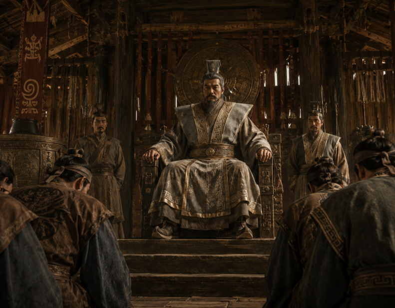
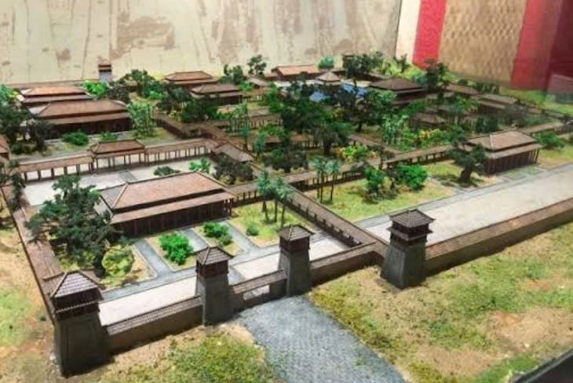
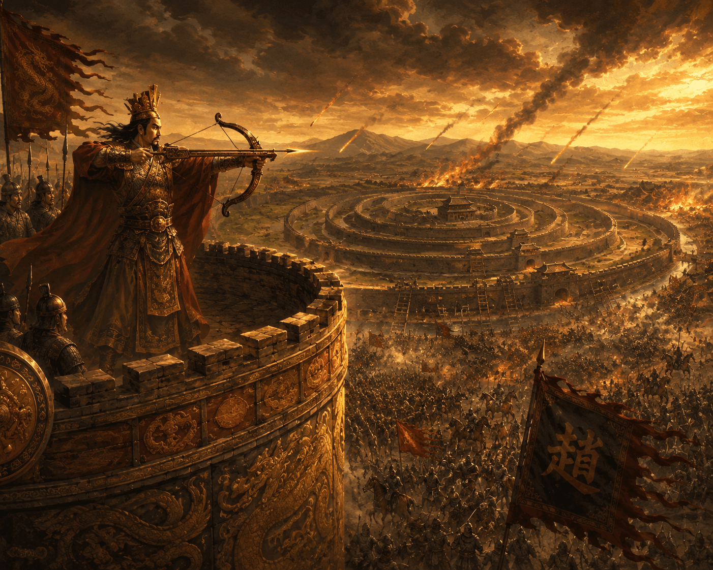
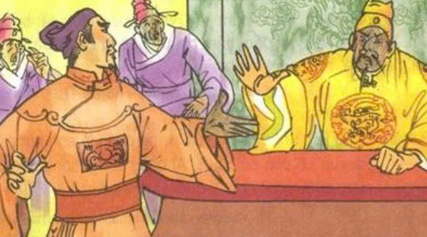
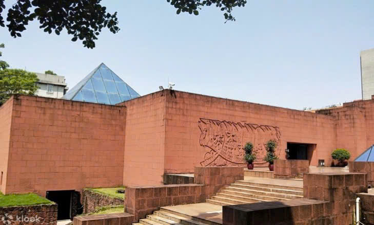

Các điểm dừng chân mở khóa dần theo từng chương. Sơ đồ cách điệu, không theo tỷ lệ địa lý thật.
📚 Nguồn Tham Khảo
Các sự kiện, ngày tháng, kết quả trong trang này được đối chiếu từ các nguồn tư liệu, chính sử và khảo cổ đã công bố. Các đoạn hội thoại (đánh dấu viền hồng, tag 🔵 dựng lại) là dựng lại minh họa dựa trên tinh thần lịch sử, không phải nguyên văn ghi âm/ghi chép.
Tài Liệu Chính Thống
Sử Ký Tư Mã Thiên — Nam Việt Úy Đà Liệt Truyện (quyển 113), nguồn chính sử sớm nhất và chi tiết nhất về Triệu Đà
Đại Việt Sử Ký Toàn Thư — Ngoại kỷ, phần Triệu kỷ và An Dương Vương kỷ
Hán Thư (Ban Cố) — chép về quan hệ ngoại giao Nam Việt – Hán triều qua ba đời vua
Bảo tàng Nam Việt Vương, Quảng Châu — hồ sơ khai quật lăng mộ Triệu Muội (1983), hiện vật khảo cổ Nam Việt Quốc
Khâm Định Việt Sử Thông Giám Cương Mục — đối chiếu niên biểu và các sự kiện liên quan đến Âu Lạc – Nam Việt
Ghi Chú Về Phương Pháp Thể Hiện
Ngày tháng, địa danh, kết quả các sự kiện chính (Nam tiến, lập Nam Việt, thôn tính Âu Lạc, đấu trí Hán triều, năm mất): dựa trên chính sử đã được công bố rộng rãi
Hội thoại giữa các nhân vật (Nhâm Ngao, Lục Giả, lời tự sự của Triệu Đà...): dựng lại nhằm mục đích minh họa, giúp người học hình dung bối cảnh — không phải trích dẫn nguyên văn có ghi chép
Chi tiết truyền thuyết Mỵ Châu — Trọng Thủy và nỏ thần Kim Quy: dựa theo Đại Việt Sử Ký Toàn Thư và truyền thuyết dân gian, mang tính biểu tượng — không phải sự kiện khảo chứng độc lập
Các con số như "50 vạn quân", "93 năm tồn tại" là số liệu được nhiều nguồn chính sử dẫn lại, có thể sai lệch theo cách ghi chép thời cổ đại
🪖
Lữ Gia — Cố vấn
Đại vương, mưu lược còn quan trọng hơn binh lực!
Liên tiếp đúng!
🔥 COMBO x3
+điểm thưởng!
⚔️
Streak
0
Điểm
0
Danh hiệu
—
👑
Sử Việt Tương Tác
TRIỆU ĐÀ Kẻ Thôn Tính Phương Nam
214 TCN — 137 TCN · Nam Việt Vũ Đế
Ngươi là một viên quan trẻ nhà Tần, được lệnh dẫn quân xuống vùng đất người Việt. 67 năm sau, ngươi trở thành hoàng đế của một vương quốc tồn tại 93 năm — bằng gươm giáo, hôn nhân chính trị, và những nước cờ ngoại giao tinh vi bậc nhất lịch sử cổ đại.
⚔️ 5 chương🎯 5 thử thách tương tác📖 Có nguồn sử liệu
📚 Bối cảnh
Năm 221 TCN, Tần Thủy Hoàng thống nhất Trung Hoa. Ba năm sau, ông sai 50 vạn quân chia năm đường tiến xuống phương Nam chinh phục các tộc Bách Việt. Triệu Đà là một trong những tướng chỉ huy chiến dịch này.
Ngươi — Triệu Đà — 25 tuổi, xuất thân từ huyện Chân Định, nước Triệu cũ. Nay làm quan huyện lệnh Long Xuyên dưới trướng nhà Tần. Lệnh từ Hàm Dương đến: dẫn quân tiến xuống vùng đất người Việt, lập quận Tượng, quận Quế Lâm để cai trị.
Nhâm Ngao — Tổng đốc Nam Hải
"Triệu Đà, ngươi đến cai quản huyện Long Xuyên. Vùng đất này hoang vu, người Việt khó trị. Nhưng nếu ngươi có tầm nhìn xa... đây có thể là cơ đồ của riêng ngươi."
🔵 Đoạn hội thoại được dựng lại dựa trên tinh thần lịch sử, không phải nguyên văn ghi chép.
🎓 Kiểm tra kiến thức · 1/2
Triệu Đà quê ở đâu và là tướng của triều đại nào trước khi lập Nam Việt?
🎓 Kiểm tra kiến thức · 2/2
Nhà Tần phái bao nhiêu quân tiến xuống phương Nam để chinh phục Bách Việt năm 214 TCN?
🗺️ Thử Thách Chương 1 · Cần vượt qua để tiếp tục!
Ghi nhớ bản đồ hành chính
Nhà Tần lập ra ba quận ở vùng Bách Việt sau chiến dịch Nam tiến. Điền tên quận còn thiếu: "Nam Hải, Quế Lâm và ___?" Gợi ý: Tên quận gắn với con sông và con voi.
⚡ Nhâm Ngao ốm nặng, sắp mất — trao toàn quyền cho ngươi. Ngươi sẽ...
📍 Lựa chọn A · Trung Nghĩa Nhưng Mù Quáng
⚠️Nguy hiểm! Nhà Tần sụp đổ năm 206 TCN. Các quan lại trung thành với Tần bị thanh trừng hoặc bị giết. Triệu Đà đã nhìn thấy điều này và quyết định khác.
⚡ Nhận ra thực tế...
⭐ Lựa chọn B · Mầm Mống Của Một Đế Quốc

👑ẢNH 2 · Triệu Đà Tự Lập · Phong trào độc lập
'">
👑Tầm nhìn vượt thời đại! Triệu Đà nghe lời Nhâm Ngao: đóng cửa ải, giết các quan Tần cứng đầu, thu phục người Việt bằng chính sách "Hán Việt hòa đồng". Khi thiên hạ loạn, ông đứng ngoài chiến tranh — gìn giữ đất phương Nam.
📖 Chính sách thu phục người ViệtTriệu Đà lấy vợ người Việt, mặc y phục người Việt, cho người Việt và người Hán kết hôn với nhau — một chính sách hội nhập hiếm có ở thời cổ đại.
🏠 Lấy vợ người Việt👘 Mặc áo Việt🤝 Hán-Việt thông hôn
⚡ Tiếp tục sang chương 2...
📍 Lựa chọn C · Phụ Thuộc Ngoại Bang
💭Dựa vào Hán hay Sở đều có nghĩa là mất quyền tự chủ. Triệu Đà hiểu rằng chỉ có tự lực mới có thể xây dựng một vương quốc thực sự.
⚡ Tự lập mới là con đường đúng...
👑 Chương 2 · 204 TCN — Nam Việt Quốc Ra Đời 📖 nguồn

🏛️ẢNH 3 · Kinh đô Phiên Ngung · Nam Việt Quốc
'">
1
214 TCN
Tần sai Triệu Đà Nam tiến
2
208 TCN
Nhà Tần sụp đổ
3
204 TCN
Lập Nam Việt
4
179 TCN
Thôn tính Âu Lạc
5
137 TCN
Qua đời
⚔️Binh lực
40%
🗺️ Lãnh thổ
Nam Việt kiểm soát vùng đất từ phía Nam sông Dương Tử đến Đèo Ngang — bao gồm Quảng Đông, Quảng Tây ngày nay và toàn bộ miền Bắc Việt Nam.
Năm 204 TCN, ngươi tự xưng Nam Việt Vũ Vương — Vũ Đế trong nội bộ, dù bề ngoài vẫn gọi là vương khi tiếp xúc với nhà Hán. Kinh đô đặt tại Phiên Ngung (Quảng Châu ngày nay). Lãnh thổ rộng lớn, dân số hỗn hợp Hán-Việt-Tày...
🎓 Kiểm tra kiến thức · 1/3
Kinh đô của nước Nam Việt do Triệu Đà lập ra là thành phố nào ngày nay?
🎓 Kiểm tra kiến thức · 2/3
Triệu Đà xưng danh hiệu gì trong nội bộ Nam Việt, dù trước mặt nhà Hán chỉ nhận là vương?
🎓 Kiểm tra kiến thức · 3/3 · Ghép đôi chính sách ↔ mục đích
Kéo thả từng chính sách của Triệu Đà vào đúng mục đích:
Chính sách
Lấy vợ người Việt
Đóng cửa ải, giết quan Tần cứng đầu
Cho người Hán-Việt thông hôn
Dùng lễ nghi người Việt
Mục đích
Thu phục nhân tâm tầng lớp quý tộc Việt
Cô lập khỏi Trung Nguyên, tự chủ hoàn toàn
Tạo dân số hỗn hợp trung thành với Nam Việt
Được lòng đại đa số người Việt bản địa
🔐 Thử Thách Chương 2 · Mở khóa để tiến vào Chương 3!
Mật thư từ Hàm Dương
Một sứ giả nhà Hán mang thư đến. Nội dung bị mã hóa bằng cách dịch chuyển mỗi chữ số sang số La Mã rồi cộng thêm 1. Thư ghi: "Lưu Bang đã thống nhất, năm nay là năm 202 - 1 TCN". Đây là năm nào?
⚡ Hán Cao Tổ Lưu Bang ra lệnh cho Triệu Đà phải quy phục. Ngươi trả lời...
📍 Lựa chọn A · Quy Phục Hoàn Toàn
😓Triệu Đà biết nhận ấn vương chỉ là bước đầu. Nhà Hán sẽ tiếp tục tăng áp lực. Ông đã dùng ngoại giao khéo léo hơn — thần phục bề ngoài mà vẫn giữ thực quyền bên trong.
⚡ Nghĩ lại chiến thuật...
⭐ Lựa chọn B · Khí Phách Đế Vương
🦁Khí phách! Khi sứ Hán Cao Tổ đến, Triệu Đà gặp mặt trong tư thế ngồi duỗi chân — thái độ ngang hàng chứ không phải bề tôi. Ông nói: "Ta và Hán Cao Tổ đều từ một gốc — sao ta phải quỳ?"
💡 Chiến lược ngoại giaoLữ Hậu (vợ Lưu Bang) sau đó cấm vận thương mại để trừng phạt. Triệu Đà lập tức xưng Hoàng Đế Nam Việt, phong vương cho các nước láng giềng như thiên tử — một tuyên bố chủ quyền mạnh mẽ nhất thời bấy giờ.
⚡ Tiếp tục chương 3...
⭐ Lựa chọn C · Ngoại Giao Hai Mặt
🎭Đây chính là nghệ thuật ngoại giao của Triệu Đà! Trước mặt nhà Hán: Vũ Vương thần phục. Bên trong Nam Việt: Vũ Đế — thiên tử thực sự. Ông duy trì thế cân bằng này trong nhiều thập kỷ.
⚡ Tiếp tục...
🎯 Chương 3 · ~185 TCN — Kế Hôn Nhân Và Nỏ Thần 🔵 dựng lại
1
214 TCN
Tần sai Nam tiến
2
204 TCN
Lập Nam Việt
3
~185 TCN
Kế hôn nhân
4
179 TCN
Thôn tính Âu Lạc
5
137 TCN
Qua đời
⚔️ Đối thủ phương Nam
Âu Lạc của An Dương Vương là rào cản cuối cùng ngăn Nam Việt mở rộng về phía Nam. Triệu Đà đã nhiều lần tấn công bằng quân sự nhưng đều thất bại vì nỏ thần Kim Quy.
Ngươi đã thử tấn công Âu Lạc — thất bại. Nỏ thần của An Dương Vương quá mạnh, quân ta thiệt hại nặng nề. Bây giờ ngươi có ba con bài trong tay: sức mạnh quân sự, hôn nhân chính trị, và kiên nhẫn chờ thời. Quan quân đều biết: đánh thẳng là con đường chết.
Triệu Đà — suy tính
"Không thể phá thành bằng vũ lực. Nhưng nếu ta có thể đặt người của ta vào bên trong thành... Trọng Thủy — con trai ta — sẽ là mũi tên mà ta bắn vào lòng địch."
🔵 Đoạn hội thoại được dựng lại dựa trên tinh thần lịch sử, không phải nguyên văn ghi chép.
🎓 Kiểm tra kiến thức · 1/2
Tại sao Triệu Đà không thể đánh thẳng vào Âu Lạc bằng quân sự trong thời gian dài?
🎓 Kiểm tra kiến thức · 2/2
Ai là người chế tạo lẫy nỏ thần theo lệnh An Dương Vương?
⚔️ Thử Thách Chương 3 · Sắp xếp đúng thứ tự kế hoạch!
Bàn cờ của Triệu Đà — Đặt các bước đúng thứ tự thực hiện
Kéo thả để sắp xếp 5 bước thực hiện kế hoạch thôn tính Âu Lạc theo đúng trình tự lịch sử:
?
Cử Trọng Thủy sang cầu hôn công chúa Mỵ Châu
?
An Dương Vương đồng ý — Trọng Thủy vào ở rể tại Cổ Loa
?
Trọng Thủy lân la, đánh tráo lẫy nỏ thần bằng lẫy giả
?
Trọng Thủy bí mật trốn về báo cho Triệu Đà
?
Triệu Đà tổng tấn công — nỏ thần hóa vô dụng, Cổ Loa thất thủ
⚡ Trọng Thủy đã vào Cổ Loa. Ngươi chờ được bao lâu thì ra tay?
📍 Lựa chọn A · Nôn Nóng
⚠️Nếu tấn công sớm khi nỏ thần còn nguyên vẹn, quân Triệu Đà sẽ thảm bại lần nữa. Kế hoạch cần thời gian — Trọng Thủy phải thực sự lấy được lòng tin của Mỵ Châu trước đã.
⚡ Nhẫn nại mới thắng...
⭐ Lựa chọn B · Kiên Nhẫn Của Bậc Đế Vương

⚔️ẢNH 5 · Thành Cổ Loa Thất Thủ · 179 TCN
'">
🎯Chiến lược hoàn hảo! Đây chính xác là những gì Triệu Đà đã làm. Ông đợi tin từ Trọng Thủy: "Lẫy nỏ đã bị đánh tráo." Lập tức dẫn đại quân tổng tấn công — nỏ thần vô dụng, Cổ Loa thất thủ trong một đêm.
📖 Kết quả năm 179 TCNAn Dương Vương chạy về phương Nam, thần Kim Quy chỉ: "Kẻ thù ngồi sau lưng ngươi đó!" — ông rút kiếm giết Mỵ Châu rồi cầm sừng tê nhảy xuống biển. Âu Lạc bị thôn tính hoàn toàn vào đế quốc Nam Việt.
📅 179 TCN🏯 Cổ Loa thất thủ⚡ Nỏ thần vô dụng🌊 An Dương Vương ra biển
⚡ Tiếp tục sang chương 4...
📍 Lựa chọn C · Khôn Ngoan Nhưng...
🤔Chờ An Dương Vương mất cảnh giác là cần thiết — nhưng quan trọng hơn là đánh tráo được nỏ thần. Không có bí mật đó, dù An Dương Vương ngủ quên trên chiến thắng cũng không thể tấn công được.
⚡ Mũi tên quan trọng hơn...
🏛️ Chương 4 · 196–180 TCN — Đấu Trí Với Hán Triều 📖 nguồn

🏛️ẢNH 6 · Sứ Giả Nhà Hán
'">
1
214 TCN
Nam tiến
2
204 TCN
Lập Nam Việt
3
179 TCN
Thôn tính Âu Lạc
4
180 TCN
Đấu trí Hán triều
5
137 TCN
Qua đời
⚔️Uy thế
75%
⚡ Căng thẳng
Sau khi Lữ Hậu ra lệnh cấm vận thương mại, Triệu Đà xưng Hoàng Đế và tấn công các quận biên giới Hán. Đây là thách thức trực tiếp với thiên tử Trung Hoa.
Ngươi đang ngồi trong cung điện Phiên Ngung. Sứ giả nhà Hán tên Lục Giả — nhà hùng biện nổi tiếng — đến lần thứ hai. Lần trước ông ta đã thuyết phục ngươi nhận ấn vương. Nay ông ta quay lại sau khi Hán Văn Đế lên ngôi, mang theo thư và lời hòa giải.
Lục Giả — sứ giả nhà Hán
"Đại vương, Hán Văn Đế lên ngôi, ông ấy là người nhân từ. Ông ấy đã cho mở lại các ải biên giới, trả lại họ hàng của đại vương tại Chân Định, sửa sang mộ phần tổ tiên ngài. Xin đại vương bỏ hiệu đế, quay về làm phên dậu của thiên triều."
🔵 Lời thoại dựng lại dựa trên tinh thần sử liệu, không phải nguyên văn.
🎓 Kiểm tra kiến thức · 1/3
Tại sao Triệu Đà quyết định bỏ hiệu Hoàng Đế và thần phục Hán Văn Đế?
🎓 Kiểm tra kiến thức · 2/3
Nam Việt tồn tại bao nhiêu năm từ khi Triệu Đà lập quốc đến khi nhà Hán diệt?
🎓 Kiểm tra kiến thức · 3/3 · Điền từ
Hoàn thành câu nói nổi tiếng của Triệu Đà với Lục Giả:
"Ta ở đây đã lâu năm, nếu ta ở Trung Nguyên ta cũng không kém gì ___. Nhưng đây là đất phương Nam, ta là chúa của đất này."
🧩 Thử Thách Chương 4 · Vận dụng tư duy chiến lược!
Bàn cờ ngoại giao — Chọn phản hồi khôn ngoan nhất
Lục Giả đề nghị: mở lại thương mại biên giới đổi lấy việc bỏ hiệu Hoàng Đế. Với tư cách Triệu Đà, câu trả lời nào vừa giữ được thể diện, vừa bảo tồn thực lực, vừa không gây chiến không cần thiết?
Nhập chữ cái A, B hoặc C:
A. "Không bao giờ! Ta là Hoàng Đế Nam Việt — không ai được ra lệnh cho ta!" B. "Ta đồng ý — bỏ hiệu đế bề ngoài, nhận ấn vương của Hán, nhưng bên trong ta vẫn là chủ tuyệt đối của đất này." C. "Ta sẽ xem xét nếu Hán trao cho ta thêm 5 quận nữa."
⚡ Lục Giả ngồi chờ câu trả lời của ngươi...
📍 Lựa chọn A · Kiêu Hùng Nhưng Mạo Hiểm
⚠️Hán Văn Đế là minh quân — ông không tấn công ngay nhưng sẽ tích lũy thực lực. Chiến tranh với nhà Hán là canh bạc mà ngay cả Triệu Đà không dám chắc thắng. Lịch sử chứng minh: 50 năm sau, Hán Vũ Đế đã diệt Nam Việt.
⚡ Cân nhắc lại...
⭐ Lựa chọn B · Nghệ Thuật Ngoại Giao Tuyệt Đỉnh
🎭Đây chính là nghệ thuật của Triệu Đà! Ông nhận ấn vương, viết thư xin lỗi Hán Văn Đế — nhưng ngay hôm đó vẫn tế trời bằng nghi lễ của thiên tử trong nội cung. Bề ngoài: thần; bên trong: vua.
🎭"Ta nhận ấn của thiên triều. Nhưng ta biết, và thiên triều cũng biết — đất phương Nam này là của ta. Đây là hòa bình thực dụng, không phải đầu hàng."
— Triệu Đà, theo sử sách Hán
⚡ Tiếp tục chương cuối...
📍 Lựa chọn C · Đàm Phán Cứng
🤝Đòi thêm điều kiện cho thấy sức mạnh thương lượng — nhưng có thể làm Hán Văn Đế tự ái. Triệu Đà thực ra đã chọn cách thể hiện thiện chí trước, nhận thưởng sau — khôn khéo hơn.
⚡ Học nghệ thuật ngoại giao...
📜 Chương 5 · Di Sản Triệu Đà — Anh Hùng Hay Kẻ Xâm Lược? 📖 nguồn

🏺ẢNH 7 · Bảo Tàng Nam Việt Vương
'">
1
214 TCN
Nam tiến
2
204 TCN
Lập Nam Việt
3
179 TCN
Thôn tính Âu Lạc
4
~180 TCN
Đấu trí Hán triều
5
137 TCN
Qua đời
📚 Tranh luận lịch sử
Triệu Đà trị vì Nam Việt 67 năm, mất năm 137 TCN, thọ hơn 100 tuổi. Câu hỏi về vị trí của ông trong lịch sử Việt Nam vẫn còn gây tranh luận đến ngày nay.
Năm 137 TCN, ngươi — Triệu Đà — qua đời, thọ hơn 100 tuổi. Ngươi đã cai trị Nam Việt 67 năm. Đế quốc của ngươi tồn tại thêm 26 năm nữa trước khi bị Hán Vũ Đế tiêu diệt năm 111 TCN. Nhưng câu hỏi lịch sử quan trọng nhất vẫn còn đó: Triệu Đà là người xây dựng hay phá hoại lịch sử Việt Nam?
🎓 Kiểm tra kiến thức · 1/3
Triệu Đà qua đời năm nào và thọ bao nhiêu tuổi (ước tính)?
🎓 Kiểm tra kiến thức · 2/3
Nam Việt bị nhà Hán tiêu diệt năm nào, dưới triều vua nào của nhà Hán?
🎓 Kiểm tra kiến thức · 3/3
Lăng mộ của vua nào trong dòng họ Triệu tại Nam Việt được phát hiện và khai quật ở Quảng Châu năm 1983?
🏆 Thử Thách Cuối · Phán xét lịch sử — Câu hỏi khó nhất!
Triệu Đà: Anh hùng hay kẻ xâm lược?
Trong lịch sử Việt Nam, có hai luồng quan điểm:
🔴 Phe "Xâm lược": Triệu Đà dùng mưu kế thôn tính Âu Lạc, áp đặt cai trị lên người Việt, mở đường cho 1000 năm Bắc thuộc.
🟢 Phe "Xây dựng": Triệu Đà xây dựng nhà nước độc lập kháng Hán, hội nhập Hán-Việt, bảo tồn văn hóa địa phương — tốt hơn bị Hán trực tiếp thống trị.
Bạn nghiêng về quan điểm nào? Nhập A (Xâm lược), B (Xây dựng), hoặc C (Cả hai — phức tạp hơn).
⚡ Nhìn lại toàn bộ hành trình — di sản quan trọng nhất của Triệu Đà là gì?
⭐ Di sản A · Bậc Thầy Ngoại Giao
🎭Triệu Đà là một trong những nhà ngoại giao xuất sắc nhất lịch sử cổ đại Đông Á. Đối mặt với ba đời vua Hán — Cao Tổ, Lữ Hậu, Văn Đế — ông không bao giờ bị khuất phục hoàn toàn, luôn tìm được thế cân bằng.
⚡ Xem kết quả cuối cùng...
⭐ Di sản B · Người Xây Dựng Nhà Nước
🏛️Nam Việt Quốc là nhà nước cổ đại có tầm ảnh hưởng lớn — kết hợp văn hóa Hán và Việt, xây dựng thể chế độc lập, tồn tại 93 năm. Dù gây tranh cãi, đây là một thực thể chính trị đáng kể của lịch sử Đông Nam Á cổ đại.
📖 Lăng mộ Nam Việt Văn ĐếNăm 1983, Quảng Châu khai quật lăng mộ Triệu Muội (cháu Triệu Đà). Bên trong có hơn 1000 hiện vật, bộ giáp ngọc bích — bằng chứng về một nền văn minh phong phú độc đáo.
🏺 1000+ hiện vật💚 Giáp ngọc bích🏛️ Bảo tàng Nam Việt Vương
⚡ Xem kết quả...
⭐ Di sản C · Bài Học Từ An Dương Vương
🎯Triệu Đà chiến thắng vì An Dương Vương thất bại. Câu chuyện này là gương soi ngàn đời: sức mạnh vũ khí vô ích nếu bí mật bị lộ, nếu lòng người bị mua chuộc. Triệu Đà không mạnh hơn — ông chỉ kiên nhẫn và khéo léo hơn.
⚡ Xem kết quả...
👑
Hành Trình Hoàn Thành!
0
—
...
📚 Bài học từ Triệu Đà — 5 bài học chiến lược1. Tầm nhìn địa chính trị: Khi Tần sụp đổ, Triệu Đà ngay lập tức hành động — không chờ thiên hạ ổn định mới tính. Người thắng luôn đi trước một bước.
2. Thu phục lòng người: Lấy vợ người Việt, mặc áo người Việt — không cai trị bằng súng ống mà bằng lòng tin. Đây là bí quyết giữ vùng đất rộng lớn hỗn hợp dân tộc.
3. Ngoại giao thực dụng: Biết khi nào nên cứng, khi nào nên mềm. Bỏ cái hiệu đế trên giấy để giữ thực quyền — đây là đỉnh cao của tư duy chiến lược.
4. Kiên nhẫn là vũ khí: Chờ 6+ năm để Trọng Thủy hoàn thành nhiệm vụ. Không vội vàng khi chưa đủ điều kiện.
5. Di sản phức tạp:Lịch sử không phải trắng đen — Triệu Đà là người xây dựng lẫn kẻ chinh phục. Hiểu được sự phức tạp đó mới là hiểu lịch sử thực sự.